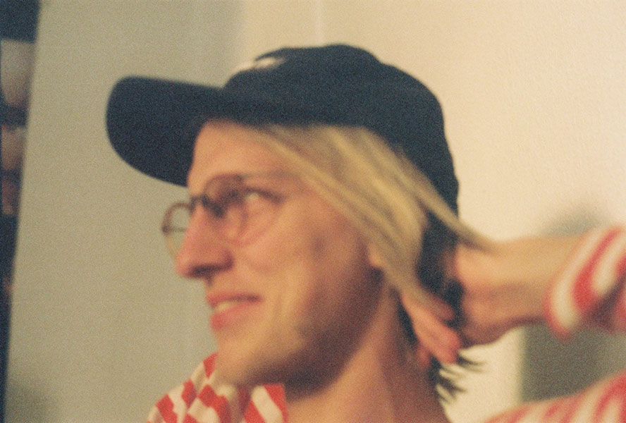

Here are some of my more professional achievements.
I've worked for big and small. Good and bad. Mostly good. Big names as Nike, Adidas, Mercedes, SMART, Ferrero, Kolding School of Design & etrans, Kontrapunkt, Sparekassen Thy and Kronjylland. Dansk Dynamit, Alive Festival.
MORE PROJECTS AND CLIENT WORK
Most of my recent work are things I did as Kopfwelt. Before that I did things as HOPE/GLORY.
See my ongoing projects. And here are some references: Dansk Dynamit, Jonas Edvard, Maiko Gubler, Super Schwarz, Torsten Mosumgaard Keramik and many others…
I helped The Nordic Embassies in Berlin, Nike, Adidas, Mercedes, CYBEX, Kontrapunkt, SMART, Ferrero, Kolding School of Design, Sparekassen Thy/Kronjylland among others.
Den Intelligente Rejsepartner — Concept for Danish travelplanner Rejseplanen.dk. Won first price in a service design competition 2011.
Ember YouTube — An Ember.js component for controlling YouTube videos.
Rough — A two-year old Gulp build system for front-end development.
Chat4000 — A real-time typing chat without a send button.
Cybex — Front-end archicture and design for everything CYBEX online. Includes towards fifteen different Google Docs-based microsites in more than fifty languages. Also see Priam.
Lodown Magazine — lifestyle magazine with a custom editor-interface for designing unique, responsive features in the browser.
GT Cintetype — Animated video microsite for the typeface by Grilli Type.
Kunstjagd — A six-week arthunt for a missing painting. Designed and developed a website to broadcast through WhatsApp live-connected to the website and Google Maps.
More on kopfwelt and hopeglory.com.
Concept for Danish travelplanner Rejseplanen.dk - won first price in a service design competition.
We looked at Rejseplanen as your eager friend, helping you with both inspiration, entertainment, knowledge and practical info, essentially expanding the focus of the Rejseplanen we know today from A-B to what we’re calling 0-A-B-C.
Together with Philip Battin.

{{/content}} {{/extend}}